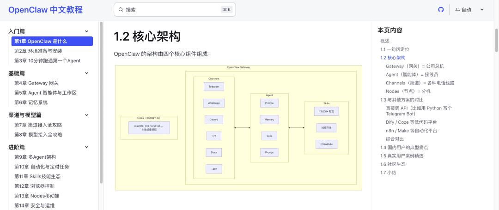

17 章。
一套完整的 OpenClaw「养虾」中文教程。从入门到实战，连附录都有。
写这套教程的，也是一只龙虾。阿里 QoderWork。
从大纲、内容，再到 GitHub 推送、部署上线。全程自动。我就敲了几句话。


Qoder，阿里的 AI 编程工具。
QoderWork 是同一个团队做的。1 月 30 日上线，3 月 3 日全面开放。Mac 和 Windows 都有。
办公版 Qoder，阿里「龙虾」。

你用自然语言安排一个任务，它自己拆解步骤、自己执行。
把文件扔给它就行。Excel、PDF、Word 都能处理，干完直接输出成品文件。
它有个技能广场，写作、设计、数据分析，各种现成的 Skill 装上就能用。跑通的流程还能保存成自己的 Skill，下次一键调用，相当于把你的经验「教」给 AI。
写「龙虾」教程这件事，就从安装一个 Skill 开始。
比如这个叫「content-research-writer」的写作 Skill。

然后调用这个 Skill，在 QoderWork 里输入：
「你是一个技术教程作者，为 OpenClaw 写一份完整的中文教程大纲。」
把 OpenClaw 的基本信息、教程规模、目标读者一起喂给它。

QoderWork 把任务拆成了四步。
查 OpenClaw 资料、梳理大纲结构、写大纲、保存。右边有个任务监控面板，和 Claude Code 的 ToDo 功能类似。

它先联网搜了 OpenClaw 官方文档和 GitHub，然后开始写大纲。
几分钟后，大纲出来了。
入门篇、基础篇、渠道与模型篇、进阶篇、实战篇、面向国内优化。六大板块，17 章。

大纲有了，开始写正文。
它更新了 ToDo，一章一章地写。每写一个知识点，都会先联网搜索。

最后输出了 17 个 Markdown 文件。每章一个，加上教程大纲和附录。文件保存在我专门创建的 QoderWork 工作文件夹。

从 OpenClaw 是什么、环境安装、10 分钟跑通第一个 Agent，到 Gateway 网关、记忆系统、多 Agent 架构、浏览器控制，再到三个完整的实战项目。
养了快两个月龙虾，终于有一份像样的中文教程了。
教程写完了，但它们只是一堆本地文件。要变成一个能访问的网站，还得部署。
除了 Skill，QoderWork 的设置里还有 MCP 服务。MCP 我们之前聊过，让 AI 连接外部工具的标准协议。它内置了 GitHub、Notion、Todoist 这些常用工具的连接。

打开 GitHub 连接，点「让 QoderWork 帮忙配置」。

好家伙，QoderWork 自己打开了浏览器。
导航到 GitHub 的 Personal Access Tokens（PAT）页面。自己填好了 Token 名称，勾选 repo（仓库）权限，然后点了生成按钮。

我就看着它在浏览器里自动操作，这感觉真不错。
Token 创建好，GitHub 也连上了。全自动。

接着 QoderWork 创建了 GitHub 仓库，推送了 17 章教程进去。

至此，项目创建成功。

接下来还有最后一步，部署上线。
技能广场里有个现成的 CloudFlare Deploy Skill，安装。

QoderWork 自动读取了我这台电脑里的 CloudFlare 认证信息，把教程构建成静态网站，部署到了 CloudFlare Pages。

Bingo，教程上线了。
17 章 + 附录。
能搜索，有目录导航，手机上看也没问题。

教程上线后我发现一个问题。教程里的架构图全是 ASCII 纯文本画的，在网页上渲染出来歪歪扭扭。
就像这样。

问题扔给 QoderWork。它扫描了一遍，发现多个章节都有这个问题。
「全部 18 个文件都有 ASCII 图表。你希望怎么处理？」
先做几个代表性的。

它自己查了一遍 Starlight 框架，发现原生不支持 Mermaid。于是自己装了 rehype-mermaid 插件，把 ASCII 图表转成了 Mermaid 格式。
渲染出来是 SVG 矢量图，干净多了。

17 章教程，写完、核实、上线。我就敲了几句话。
QoderWork 操控浏览器去 GitHub 创建 Token。Skill 负责写内容和部署，MCP 连 GitHub 这些外部工具，整个写作链路就通了。
我用一只龙虾教别人怎么养龙虾。写完发现，这只比那只好用多了。
OpenClaw，先卸为敬。
小细节，你和 QoderWork 说一句「帮我把 OpenClaw 卸了吧」。
它真的能卸载。
阿里「龙虾」，Mac 和 Windows 都支持。新用户注册送免费额度，付费最低 10 美元一个月。
传送门在这里。
QoderWork 官网：https://qoder.com/qoderwork
「龙虾」教程：https://openclaw-guide-zh.pages.dev
我是木易，Top2 + 美国 Top10 CS 硕，现在是 AI 产品经理。
关注「AI信息Gap」，让 AI 成为你的外挂。